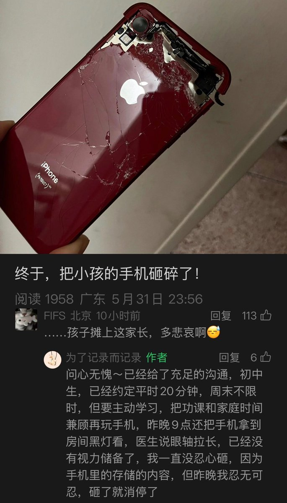

@CyberKanjousen 依照双允的经历看，约定或许是家长单方面展现的自以为是的仁慈，孩子是没有谈判的余地的。沟通或许也只是孩子对于家长要求的妥协，为了能够获得上网的资格。
不过，不了解事实，以上仅作猜测。
但是简单粗暴，而且任何一方都得不到好处（双允视角）的行动，是应该避免的

不过，不了解事实，以上仅作猜测。
但是简单粗暴，而且任何一方都得不到好处（双允视角）的行动，是应该避免的

终于，把小孩的自尊砸碎了！
实际上在環状線看来，此家长只是在用自己的错误惩罚孩子而已。这种简单粗暴的方式虽然确实可能「根治」手机问题，但是对亲子关系也会造成的不可逆转的破坏，甚至可能给孩子留下心理阴影。
就算是環状線的家长，无论多么情绪化，也没有砸过电子产品呢…… https://t.co/dwoQGT2Tdv
实际上在環状線看来，此家长只是在用自己的错误惩罚孩子而已。这种简单粗暴的方式虽然确实可能「根治」手机问题，但是对亲子关系也会造成的不可逆转的破坏，甚至可能给孩子留下心理阴影。
就算是環状線的家长，无论多么情绪化，也没有砸过电子产品呢…… https://t.co/dwoQGT2Tdv